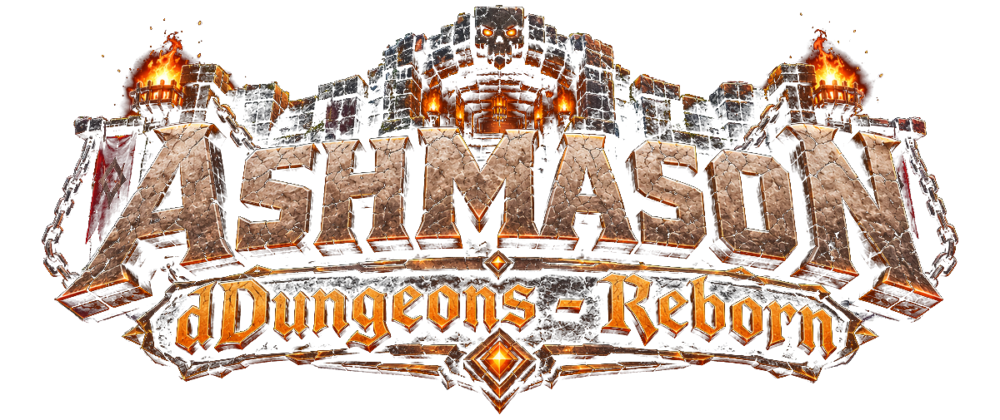
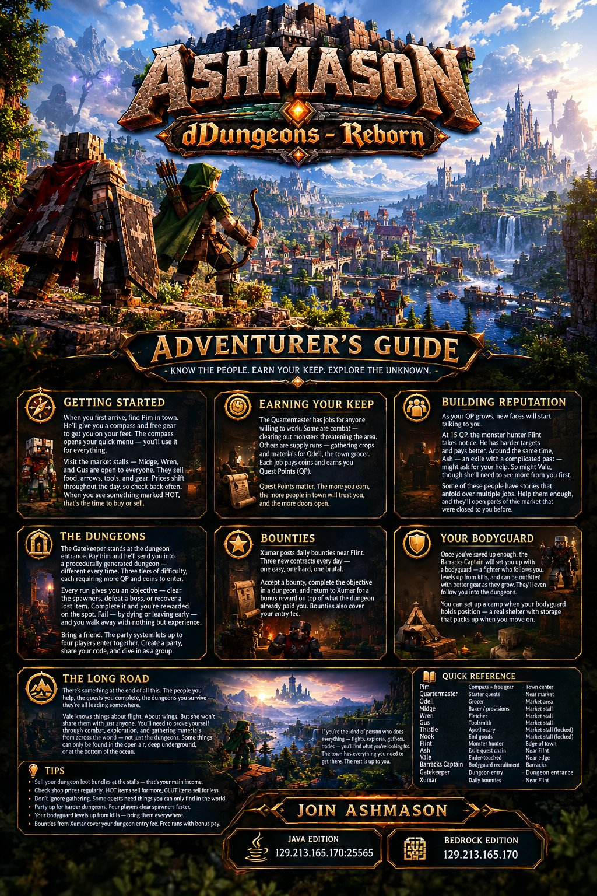

Tier I
Low
- Key
- 10 coins
- Requires
- Nothing
- Cooldown
- ~10 min
- Reward
- Common → Rare loot bundles

A Minecraft adventure server. Quests, companions, procedural dungeons, and a town full of people who remember what you did last week.
AshMason is a built world with a town, a market, a guild of hunters, exiles with stories, and a procedural dungeon at the edge of the map. You show up, earn your keep, and slowly become someone the town knows.
Each one holds a door. Some open the first day. Some wait until the town decides you're worth talking to.
dDungeons Reborn
The Gatekeeper takes your key and drops you into a dungeon that didn't exist five seconds ago. Layouts, mobs, spawner banks, loot — all rolled at entry. Every run gives you an objective: clear the spawners, kill the boss, or recover a marked item. Complete it and you're paid on the spot. Die or walk out early and you leave with what you can carry.
Bring up to three friends. /party create, share the
code, dive in together. Bodyguards come too.
The Long Road
Every quest, every bounty, every clean dungeon run pushes you further into a story the town has been telling itself for a while. The Quartermaster teaches you to hold your own. Flint teaches you to hunt. Ash teaches you what it's like to be exiled from a place you can't stop thinking about.
And Vale knows things about flight.
About wings. About what it takes to leave the ground for good. But she won't share any of it with someone the town doesn't trust. Prove yourself — through combat, through exploration, through the things you can only find in open air, deep underground, or at the bottom of the ocean — and eventually she'll show you the way up.
Poster
Everything on one page. Print it, pin it, or keep it open on a second monitor while you play.
Download the guide →
Join
Java + Bedrock cross-play via Geyser + Floodgate. No mods required.
{kind=link}